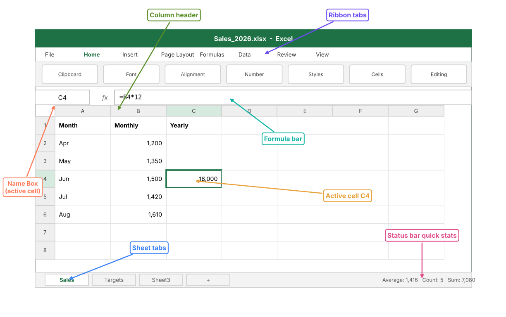
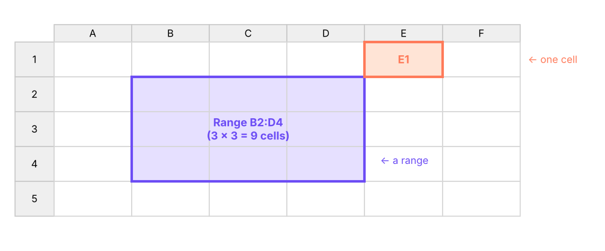

Learn the Excel window, the words analysts use every day, how to lay out data so it can be analysed, the five data types Excel understands, and the shortcuts that save hours.
● Live classes 1–2✦ Excel for Microsoft 365, 2026Beginner⏱ 90 min
Even with Python, SQL, Power BI and AI assistants, Excel is still the first tool almost every analyst opens. It is where business teams keep budgets, targets, trackers and exports from other systems. If you can clean, analyse and present data in Excel quickly, you can add value from day one in any data role.
Excel is also the easiest place to learn data thinking. Every idea you meet here comes back later:
Idea in Excel
Same idea later in the course
A table with one header row
A SQL table, a pandas DataFrame, a Power BI table
SUMIFS, COUNTIFS
GROUP BY in SQL, groupby() in pandas, DAX measures
VLOOKUP / XLOOKUP
SQL JOIN, pandas merge(), Power BI relationships
Pivot table
SQL aggregation, pivot_table() in pandas, Power BI matrix
Conditional formatting
Highlighting in dashboards
Live classWhat was covered in class
Live class 1 was the programme introduction. Live class 2 covered the basics of Excel, terminology, shortcuts, Excel properties, data types, data validation and formatting, and we started working on the first sheet. This lesson covers the first half; data validation and formatting continue in Lessons 2 and 3.
The Excel window, part by part

The main parts of the Excel window. The active cell is C4, and the formula bar shows the formula inside it.
Part
What it does
Tip
Ribbon
Commands grouped into tabs: Home, Insert, Formulas, Data, Review, View
Press Alt to see a key letter on every command
Name Box
Shows the address of the active cell or the name of a selected range
Type D500 and press Enter to jump straight there
Formula bar
Shows what is really inside the cell: a value or a formula
The cell shows the result; the bar shows the recipe
Column headers
Letters A, B, C … XFD (16,384 columns)
Double-click the border between headers to auto-fit width
Row headers
Numbers 1 to 1,048,576
Click a row number to select the whole row
Sheet tabs
Each tab is one worksheet inside the workbook
Right-click a tab to rename, colour, move or copy it
Status bar
Quick sum, average and count of the selected cells
Right-click it to add Min, Max and Numerical Count
TipThe status bar is a free calculator
Select any numbers and look at the bottom-right corner. Excel shows the Average, Count and Sum without you writing a formula. It is the fastest way to sanity-check a total someone sends you.
The vocabulary every analyst uses
DefinitionCore terms
Workbook: the file (.xlsx). One workbook holds many worksheets.
Worksheet (sheet): one grid of rows and columns inside a workbook.
Cell: one box where a row and a column meet, for example C4.
Cell reference (address): column letter + row number, such as C4. Used inside formulas to point at cells.
Range: a rectangle of cells written as first:last, for example A1:C10 (3 columns × 10 rows = 30 cells).
Formula: anything that starts with = and calculates a result, such as =B4*12.
Function: a built-in, named formula that takes inputs (arguments), such as =SUM(B2:B6).
Argument: an input you give a function, separated by commas: =ROUND(B2, 1) has two arguments.

How cells, ranges and references relate. A range is always written from its top-left cell to its bottom-right cell.
Excel limits worth knowing
Item
Limit in Excel 365
Rows per sheet
1,048,576
Columns per sheet
16,384 (A to XFD)
Characters in one cell
32,767
Characters in a formula
8,192
Arguments in one function
255
Decimal precision
15 significant digits
Watch outThe 15-digit trap
Excel keeps only 15 significant digits. If you type a 16-digit card number or a long ID, the last digits turn into zeros. Store long IDs, phone numbers, PIN codes and account numbers as text (format the column as Text first, or start the entry with an apostrophe ').
Structured data: the single most important habit
Excel will do almost anything, but it can only analyse data that is laid out as a clean table. Analysts call this structured or tidy data.
Step by stepThe six rules of a structured table
One header row at the top, with a unique, short name for every column.
One record per row, for example one order, one employee or one day.
One kind of information per column: dates only in the date column, numbers only in the amount column.
No blank rows or blank columns inside the table.
No merged cells and no totals typed in the middle of the data.
Raw values, not decorations: write Delhi, not Delhi ✔ (checked).
Here is a typical "report-style" sheet that looks fine to a human but is hard to analyse:
XBefore: a report, not a table
A
B
C
D
1
Sales Report – Q1
2
Region: North
3
Name
Jan
Feb
Mar
4
Asha Rao
12,000
15,500
n/a
5
Ravi Verma
9,800
11,250
6
7
Region: South
8
Name
Jan
Feb
Mar
9
Meera Iyer
14,250
13,900
16,100
10
TOTAL
36,050
29,400
27,350
Problems: a title row above the headers, the region written as a heading instead of a column, a blank row, the header row repeated, numbers stored as text with commas, n/a mixed into a number column, and a total row inside the data.
The same information as a structured table:
XAfter: a structured table (long format)
A
B
C
D
1
Region
Name
Month
Sales
2
North
Asha Rao
Jan
12000
3
North
Asha Rao
Feb
15500
4
North
Ravi Verma
Jan
9800
5
North
Ravi Verma
Mar
11250
6
South
Meera Iyer
Jan
14250
7
South
Meera Iyer
Feb
13900
8
South
Meera Iyer
Mar
16100
9
Total
92800
D9=SUM(D2:D8)
Now a pivot table, a SUMIFS, a chart or Power BI can use the data immediately. The total sits below the table, not inside it, and is calculated, not typed.
TipLong format beats wide format
In the "before" sheet each month is a separate column (wide format). In the "after" sheet the month is a value in one Month column (long format). Long format is what pivot tables, SQL and Power BI expect. In Lesson 12 you will see how Power Query's Unpivot turns wide data into long data in one click.
The five data types Excel understands
Every cell holds exactly one type of value. Knowing the type explains most "my formula doesn't work" problems.
Type
Examples
Default alignment
Notes
Number
42, 3.14, -500, 18%
Right
Percentages and currency are numbers with a format
Text (string)
Delhi, E101, '00451
Left
Anything Excel cannot read as a number
Date / time
27-04-2026, 14:30
Right
Stored as a serial number: days since 1 Jan 1900
Logical (Boolean)
TRUE, FALSE
Centre
Result of comparisons like =B2>100
Error
#N/A, #DIV/0!, #VALUE!
Centre
Tells you a formula has a problem
Excel's own functions can tell you the type of a value. Each formula in column B below checks the value in column A:
XChecking data types with functions
A
B
C
D
1
Value
ISNUMBER
ISTEXT
TYPE (1=number, 2=text, 4=logical)
2
42
TRUE
FALSE
1
3
Delhi
FALSE
TRUE
2
4
00451
FALSE
TRUE
2
5
27-04-2026
TRUE
FALSE
1
6
TRUE
FALSE
FALSE
4
7
1500
FALSE
TRUE
2
B2=ISNUMBER(A2)
C2=ISTEXT(A2)
D2=TYPE(A2)
Each pattern is copied down/across to the other cells in its column.
Notice two important results:
The date in row 5 is a number. Excel stores 27-04-2026 as the serial number 46139, which is why you can subtract one date from another to get days.
'1500 in row 7 is text, even though it looks like a number. SUM ignores it. Imported data often has "numbers stored as text"; Excel flags them with a small green triangle.
XDates are numbers underneath
A
B
C
1
Date
Same cell shown as a number
Days until 31-Dec-2026
2
27-04-2026
46139
248
3
01-01-2026
46023
364
B2=A2
C2=DATE(2026,12,31)-A2
B3=A3
C3=DATE(2026,12,31)-A3
Common mistakesFixing numbers stored as text
Select the cells, click the yellow warning icon, choose Convert to Number.
Or use Data → Text to Columns → Finish on the column.
Or in a formula: =VALUE(A7) or =A7*1.
Remove hidden spaces first with =TRIM(A7) (and =CLEAN() for line breaks from web exports).
Error values and what they mean
Error
Meaning
Typical cause
#DIV/0!
Division by zero
=A2/B2 where B2 is empty or 0
#N/A
Value not available
A lookup could not find the value
#VALUE!
Wrong type of argument
Doing maths with text, such as ="abc"*2
#REF!
Invalid reference
You deleted a row or column a formula used
#NAME?
Excel does not recognise a name
A typo in a function name, or text without quotes
#NUM!
Invalid number
=SQRT(-1)
#SPILL!
A dynamic array has no room
Cells below the formula are not empty (Lesson 6)
#####
Not an error
The column is too narrow to show the value
Excel properties: what makes a workbook "smart"
These behaviours make Excel more than a calculator:
Automatic recalculation: change an input and every dependent formula updates instantly (Formulas → Calculation Options can switch this to Manual for huge files; press F9 to recalculate).
Relative references: copy =B2*12 down and it becomes =B3*12, =B4*12 automatically (Lesson 4 covers $ to lock references).
AutoFill: drag the small square (fill handle) at the bottom-right of a selection to continue patterns: Jan → Feb → Mar, 1, 2, 3, Mon, Tue, dates and formulas.
Flash Fill (Ctrl + E): type one or two examples of a pattern (such as first names taken from full names) and Excel fills the rest.
Excel Tables (Ctrl + T): turn a range into a named table that expands automatically, keeps formatting, and allows readable formulas like =SUM(Sales[Amount]).
File properties: File → Info shows the author, size, last-modified date and lets you inspect the workbook for hidden data before sharing.
2026 updateWhat's new in Excel (2025–2026)
Copilot in Excel can explain formulas, suggest formula columns, highlight insights and create charts from a plain-English request (Microsoft 365 Copilot licence required).
Python in Excel lets you type =PY( and run pandas code inside a cell; the code runs in Microsoft's cloud.
Dynamic array functions such as UNIQUE, SORT, FILTER, XLOOKUP, TEXTSPLIT, GROUPBY and PIVOTBY are now standard in Microsoft 365.
Checkbox cells (Insert → Checkbox) store TRUE/FALSE and are useful for trackers.
You will use each of these later in the Excel track.
Keyboard shortcuts that save hours
You do not need to memorise 100 shortcuts. Learn these 25 and you will already be faster than most office users. (Mac users: replace Ctrl with Cmd for most of them.)
Task
Shortcut
Jump to the edge of the data
Ctrl + Arrow key
Select to the edge of the data
Ctrl + Shift + Arrow key
Select the whole current table
Ctrl + A (inside the data)
Go to cell A1 / last used cell
Ctrl + Home / Ctrl + End
Select a whole column / row
Ctrl + Space / Shift + Space
Insert / delete rows or columns
Ctrl + Shift + + / Ctrl + -
Edit the active cell
F2
Lock a reference ($A$1 → A$1 → $A1)
F4 while editing a formula
Fill down / fill right
Ctrl + D / Ctrl + R
Enter the same value in all selected cells
type, then Ctrl + Enter
AutoSum
Alt + =
Today's date / current time
Ctrl + ; / Ctrl + Shift + ;
Create an Excel Table
Ctrl + T
Toggle filters
Ctrl + Shift + L
Format Cells dialog
Ctrl + 1
Show formulas instead of results
Ctrl + `
Flash Fill
Ctrl + E
Paste Special
Ctrl + Alt + V
Find / Replace
Ctrl + F / Ctrl + H
New sheet
Shift + F11
Move between sheets
Ctrl + Page Up / Page Down
Hide rows / columns
Ctrl + 9 / Ctrl + 0
Undo / Redo
Ctrl + Z / Ctrl + Y
Repeat last action
F4 (outside a formula)
Show key tips on the ribbon
Alt
TipPractise with real data
Open employees_small.csv (download it from the top of this lesson). Click any cell inside the data, press Ctrl + A, then Ctrl + T to make it a Table. Press Ctrl + Down to jump to the last row and Ctrl + Home to come back. Select the salary column and read the Sum and Average in the status bar.
Your first worksheet, step by step
Let's build a small salary sheet with the 20-row employee file. The first rows look like this:
Python
import pandas as pd
emp = pd.read_csv("employees_small.csv")
emp.head(6)
Output
emp_id
name
department
city
join_date
salary
rating
0
E101
Kavya Iyer
HR
Mumbai
2016-02-28
97000
4
1
E102
Imran Reddy
Finance
Delhi
2019-12-14
157000
3
2
E103
Harpreet Kulkarni
Finance
Mumbai
2024-10-05
131000
4
3
E104
Diya Iyer
HR
Bengaluru
2024-01-02
90000
4
4
E105
Simran Iyer
HR
Bengaluru
2017-08-03
139000
4
5
E106
Saanvi Rao
HR
Delhi
2025-02-18
83000
4
6 rows × 7 columns
Step by stepBuild it
Open the CSV in Excel (File → Open, or Data → From Text/CSV).
Press Ctrl + T to convert it to a Table, and name it Emp (Table Design → Table Name).
In a new column annual_salary, type = then click the salary cell and type *12. Because it is a Table, Excel fills the whole column with =[@salary]*12.
Below the data, add summary formulas: total salary, average salary, number of employees.
Format the salary columns as #,##0 with Ctrl + 1 (Lesson 3 explains every format).
Freeze the header row: View → Freeze Panes → Freeze Top Row.
XFirst worksheet: summary formulas (data on sheet Emp)
A
B
C
1
Measure
Formula result
What the formula does
2
Employees
20
Counts non-empty IDs
3
Total monthly salary
1,978,000
Adds the salary column
4
Average monthly salary
98,900
Total ÷ count
5
Highest salary
157,000
Largest value
6
Lowest salary
45,000
Smallest value
B2=COUNTA(Emp!A2:A21)
B3=SUM(Emp!F2:F21)
B4=AVERAGE(Emp!F2:F21)
B5=MAX(Emp!F2:F21)
B6=MIN(Emp!F2:F21)
The results above were calculated from the real file. Check them yourself in Python:
Very large workbooks; binary format opens and saves faster
.csv
Plain data to move between systems (Python, SQL, Power BI). Keeps only one sheet and no formatting or formulas
.pdf
Read-only reports for people who should not edit
Watch outCSV and leading zeros
When you open a CSV directly, Excel guesses types and may drop leading zeros (00451 → 451) or turn codes like 1-2 into dates. Use Data → From Text/CSV and set the column type to Text in the preview to keep values exactly as they are.
Summary
Key takeaways
The cell shows the result; the formula bar shows what is really inside.
A range is written top-left to bottom-right, for example B2:D4.
Analyse only structured data: one header row, one record per row, one type per column, no blanks, no merged cells, no totals inside.
Excel has five value types: number, text, date/time (a number underneath), logical, error.
Long IDs and codes must be stored as text to avoid the 15-digit and leading-zero traps.
1. A cell shows 18,000, but the formula bar shows =B4*12. What is inside the cell?
Answer: B. The cell displays the result; the formula bar shows what is stored. This cell stores a formula.
2. How many cells are in the range B2:D5?
Answer: C. Columns B, C, D = 3 columns; rows 2 to 5 = 4 rows; 3 × 4 = 12 cells.
3. Which of these breaks the rules of structured data?
Answer: B. Region should be its own column, with the value repeated on every row. Merged headings make the data impossible to sort, filter or pivot.
4. Why does SUM ignore some numbers imported from a CSV file?
Answer: B. Numbers stored as text are skipped by SUM. Convert them with Text to Columns, VALUE() or Convert to Number.
5. What does Excel store when you type the date 27-04-2026?
Answer: B. Dates are numbers formatted to look like dates. That is why date arithmetic works.
6. Which shortcut turns a range into an Excel Table?
Answer: C. Ctrl + T creates a Table. Ctrl + E is Flash Fill, Ctrl + 1 opens Format Cells, Ctrl + Shift + L toggles filters.
ExerciseClean a messy sheet
Look at the "Before" report in this lesson. Write down, in order, the steps you would take in Excel to turn it into the "After" table.
Show solution
Delete the title row and the blank row.
Insert a new first column called Region and fill it with North or South for each person; delete the "Region:" heading rows and the repeated header row.
Delete the TOTAL row (totals belong below or in a pivot table).
Replace n/a with an empty cell (Ctrl + H, replace n/a with nothing).
Convert the Jan–Mar columns to real numbers (Text to Columns or Convert to Number).
Unpivot the month columns into Month and Sales (Power Query → Unpivot Other Columns, Lesson 12) so each row is one person-month.
Press Ctrl + T to make it a Table and add the total with =SUM() below it.
ExerciseSpot the data type
For each entry, say which data type Excel stores: ₹1,250, '2026, 15:45, =5>3, #N/A, Pune.
Show solution
₹1,250 is a number (currency format). '2026 is text because of the apostrophe. 15:45 is a time, which is a number (0.65625 of a day). =5>3 returns the logical value TRUE. #N/A is an error. Pune is text.
Interview cornerQuestions you may be asked
Q: What is the difference between a formula and a function?
A formula is any expression that starts with = (for example =A2*B2). A function is a named, built-in calculation used inside formulas (for example SUM, VLOOKUP). Every function is used in a formula, but not every formula uses a function.
Q: How does Excel store dates, and why does it matter?
As serial numbers (days since 1-Jan-1900; times are fractions of a day). It means you can subtract dates to get durations, add days to a date, and sort dates correctly. If a date is stored as text, none of that works.
Q: What makes data "analysis-ready"?
One header row, one record per row, one data type per column, no blank rows or merged cells, no subtotals mixed into the data, and consistent spelling of categories.
Practise more online
Free, trusted places to test yourself on this topic. Links open the original site in a new tab.